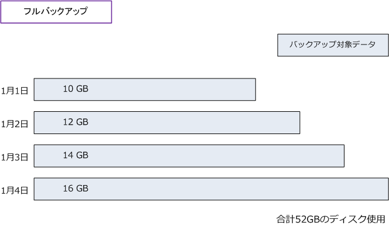
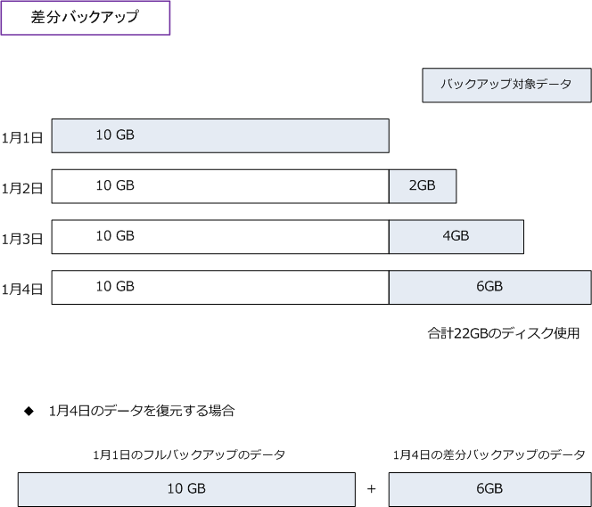
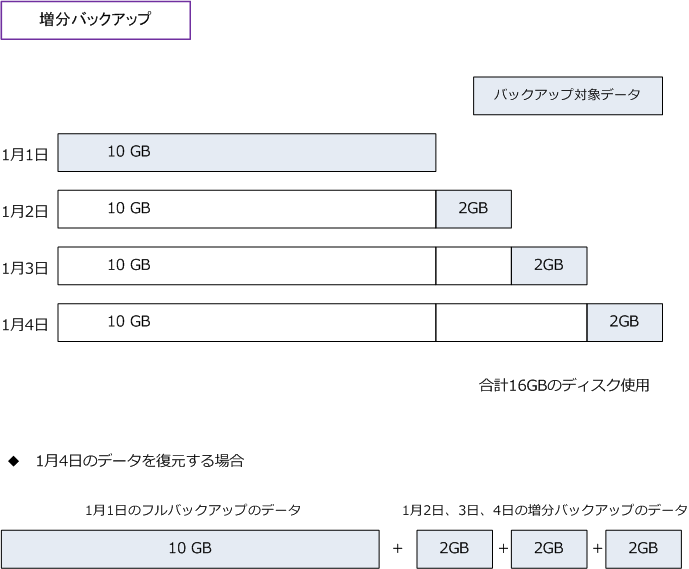
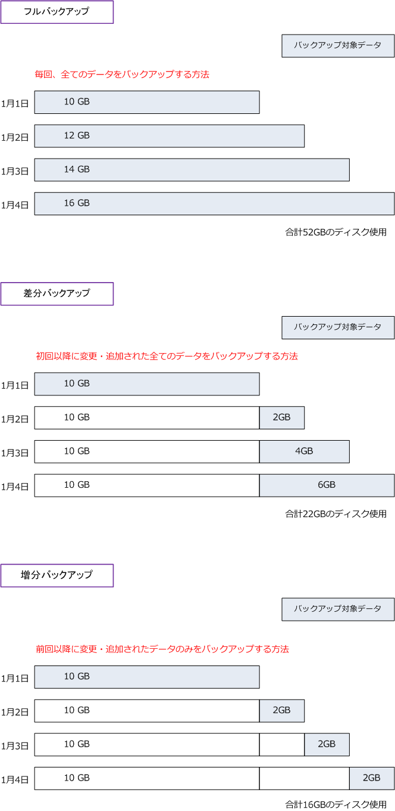

full backup / differential backup / incremental backup
フルバックアップとは
フルバックアップは、ディスク内のすべてのデータを完全に複製することです。フルバックアップでは 時間の経過とともに増えていく全てのデータをバックアップしていくことから、下図の4日間の合計では 52GB分のディスクを使用することになります。また、データが増えていくごとにバックアップに時間が かかります。一方、データの復旧（ リストア ）はとても簡単であり、リストア時の手間はかかりません。

| フルバックアップ | 説明 |
|---|---|
| メリット | 全てのバックアップデータが一か所にまとまっているため、復旧（リストア）の手間が少ない。 |
| デメリット | 毎回全てのデータを複製する必要があるため、バックアップに時間がかかる。空き容量が多く必要。 |
差分バックアップとは
差分バックアップは、初回行ったフルバックアップからの変更や追加されたデータを複製するバックアップ。 差分バックアップでは、まず初回にフルバックアップを行います。2回目以降は初回のフルバックアップから 変更・追加されたデータのみバックアップを行います。
下図では分かりやすく、1月2日以降は「毎日2GBのデータの変更・追加があった」という前提としています。

差分バックアップではフルバックアップに比べると、バックアップのデータ量が少なくできることから、その バックアップ時間が短くてすみます。また、1月4日のデータを復元する場合は、初回分のフルバックアップの データ（1月1日）と最後の差分バックアップのデータ（1月4日）が必要になるだけなので、増分バックアップ に比べるとリストア作業がスムーズに行えます。差分バックアップはバランスの良いバックアップ方法です。
| 差分バックアップ | 説明 |
|---|---|
| メリット | バックアップのデータ量を少なくできる。リストアは初回分と差分の2つのデータだけで可能。 |
| デメリット | 増分バックアップに比べるとバックアップのデータ量は多くなり、バックアップ時間がかかる。 |
増分バックアップの解説は以下のとおりとなりますが、差分バックアップと増分バックアップの大きな違いは、 差分バックアップは「初回のフルバックアップ」から変更・追加のあったデータをバックアップするのに対し 増分バックアップは「前回行われたバックアップ」から変更・追加のあったデータをバックアップする点です。
増分バックアップとは
増分バックアップは、前回行われたバックアップからの変更や追加されたデータのみ複製するバックアップ。 増分バックアップでは、まず初回にフルバックアップを行います。2回目以降では、前回のバックアップから 変更・追加されたファイルのみをバックアップを行います。
下図では分かりやすく、1月2日以降は「毎日2GBのデータの変更・追加があった」という前提としています。

差分バックアップでは初回のフルバックアップ以降に変更・追加された全てのファイルがバックアップされて いくのに対し、増分バックアップでは前回以降に変更・追加されたファイルのみをバックアップすることから 増分バックアップは差分バックアップよりもバックアップ時間が短くなり、ディスク使用が少なくなるという メリットがあります。一方で、増分バックアップのリストアは、初回のフルバックアップデータから、2回目、 3回目、4回目と順にリストアを行う必要があります。完全なリストアに全ての増分データが必要となります。
| 増分バックアップ | 説明 |
|---|---|
| メリット | バックアップのデータ量を最も少なくできる。バックアップ時間が最も短いバックアップ方法。 |
| デメリット | リストア時に、複数のデータブロックをつなぎ合わせるので最も手間のかかるバックアップ方法。 |
フルバックアップ、差分バックアップ、増分バックアップの違い
